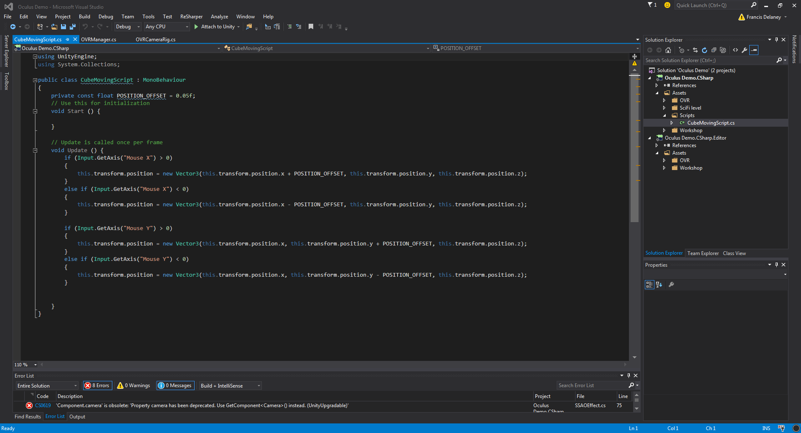
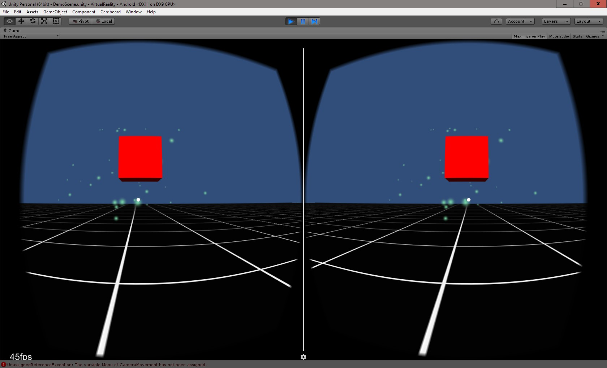

2. Description de l'expérimentation
Notre intérêt principal lors du développement de notre prototype était d’étudier le comportement de l’oeil humain derrière un casque VR. Comment fonctionne la perspective dans un univers virtuel? Comment est créé l’effet de profondeur? Que ce passe-t-il s’il on ferme un oeil? Ces résultats sont-ils semblables à ce que nous pourrions observer normalement? Pour répondre à nos question, nous avions besoin de créer une application dans laquelle nous pouvions nous déplacer dans un univers semblable au notre.
Puisque le développement en tant que tel n’était pas notre priorité, nous avons choisi d’utiliser Unity, puisque son interface très intuitif et son engin intégré nous ferais sauver beaucoup de temps. Une fois les bons SDK installés et nos téléphones prêts, nous avons pu débuter le développement. Au commencement, nous fonctionions par essais et erreurs, puisque nous étions très peu expérimentés à la fois à la technologie Cardboard/Oculus, mais également à Android. Nous avons vite remarqués qu’Unity nous simplifiais grandement la tâche.
Une fois familiarisés avec la technologie, nous avons commencé la partie principale de notre projet: la recherche théorique. Tout d’abord, il fallait évidemment commencer par étudier le fonctionnement de l’oeil humain. Une fois les bases acquises, une courte recherche sur les caméras 3D et sur le fonctionnement d’une vidéo 360 degrés était de mise. Par la suite, nous avons étudier le fonctionnement des lentilles utilisées dans un casque VR et comment elles affectent notre oeil. Puisque nos casques utilisent des téléphones Androids, une recherche sur les différents capteurs intégrés dans ces téléphones n’était pas de trop. Puis nous avons terminés par une courte étude de la réalité virtuelle sur la marché du jeu vidéo, utilisant notre analyse et nos théories futures.
Une fois notre recherche terminée, nous nous sommes concentrés sur les prototypes. Puisque l’achat du Samsung Gear VR en cours de route nous a apporté la technologie Oculus, nous avons décidés de faire deux prototypes distincts. Le but du prototype Cardboard serait de tester tout ce qui tourne autour de l’oeil et de la perspective, alors que le prototype Oculus s’occuperait d'utiliser le téléphone au maximum et de définir les limites de la technologie. C’est avec ces buts en tête que nous avons développés les prototypes mentionnés ci-haut.
